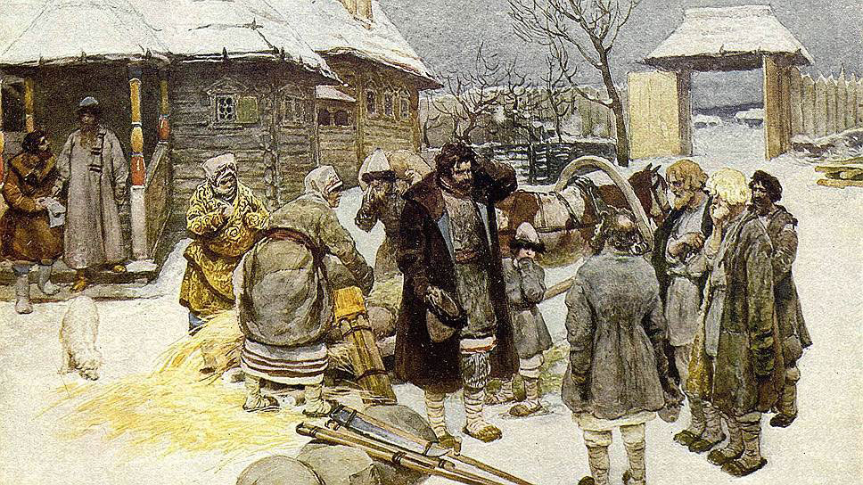
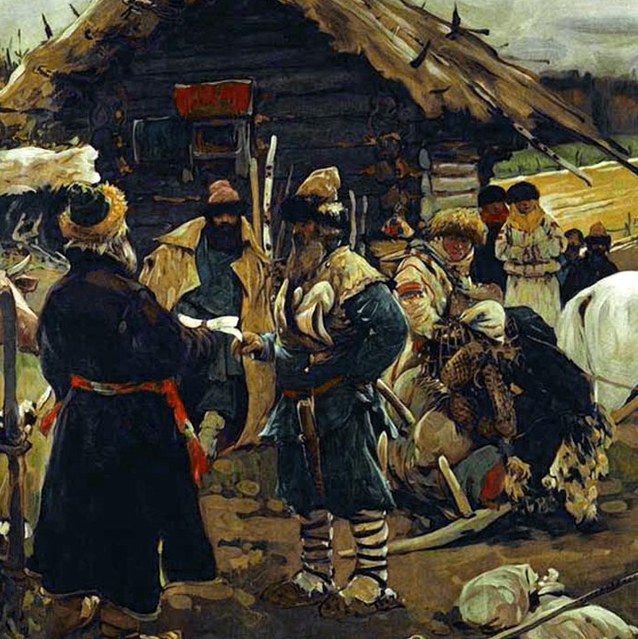
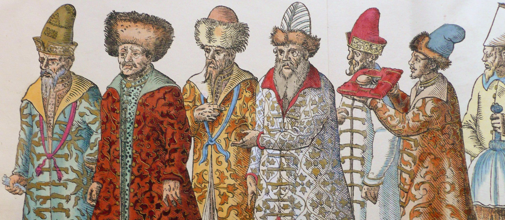

К чему же в итоге Смутное время привело?

Во-первых, Россия потеряла много своих западных территорий. Смоленск утрачен на многие десятилетия в пользу Великого княжества Литовского. Значительная часть Карелии захвачена Швецией, с ее территории ушло практически все православное население. Потерян выход к балтийскому морю. Шведы покинули Новгород лишь в 1617 году, в полностью разоренном городе осталось всего несколько сотен жителей. Отвоевать побережье Финского залива и территорию Ингерманландии смогли отвоевать лишь при Петре I.
Во-вторых, начался глубокий хозяйственный упадок. Во многих уездах исторического центра государства размер пашни сократился в 15 раз, а численность крестьян в 4 раза. В западных уездах обработанная земля составляла от 0,05 до 4,8 %. Земли во владениях Иосифо-Волоколамского монастыря были «все до основания разорены и крестьянишки с жёнами и детьми посечены, а достольные в полон повыведены… а крестьянишков десятков пять-шесть после литовского разорения полепились и те ещё с разорения и хлебца себе не умеют завесть». В ряде районов и к 1620—1640 годам населённость была всё ещё ниже уровня XVI века. И в середине XVII века «живущая пашня» в Замосковном крае составляла не более половины всех земель, учтённых писцовыми книгами. Кроме того, значительная деградация наблюдается и в способе ведения сельского хозяйства. Некоторые районы страны вернулись к подсечно-огневому земледелию и перелогу вместо трёхполья. Последствия Смуты были столь трагичны для хозяйства, что только во второй половине XVII в. трёхполье вновь становится преобладающим.


В-третьих, войска снизили свою боеспособность. Смотры провинциального дворянства в 1622 году показали, что русское войско практически неспособно к боевым действиям. Лишь 10 % явившихся на службу были полноценными воинами. В Елецком уезде 20 % помещиков были сироты до 15 лет, из них половина «бродят меж дворы».
Смутное время показало, как боярская верхушка, которой в отсутствие государя нужно было взять в свои руки судьбу страны, не смогла сделать этого и оказалась неспособной противостоять незаконным действиям польского короля Сигизмунда. Хотя предпосылки этого отмечаются еще в XVI веке, когда московские государи, особенно Иван IV, своей политикой способствовали тому, что русская знать утратила политическую активность. Во время кризиса Смуты и ослабления государства, появилось осознание, что не только государь и бояре, но и «вся земля» ответственна за судьбу страны. Это осознание общей ответственности в наиболее полном виде выразило Второе ополчение, инициатива организации которого целиком исходила от низов, из среды посадских людей. Однако восстановление, а затем и усиление государственного — самодержавного — начала, стало причиной угасания гражданских инициатив, ещё сохранявшихся в коллективных челобитных XVII века.
